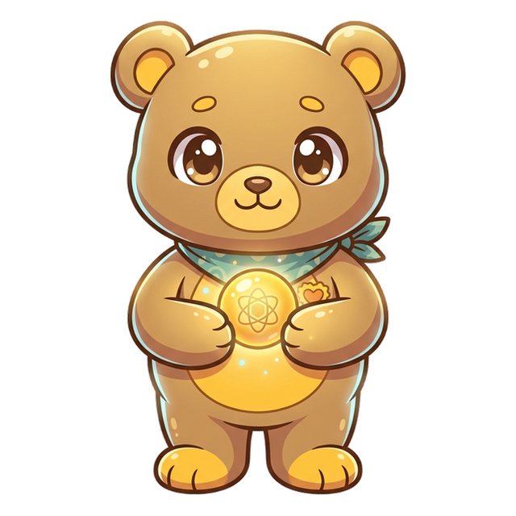
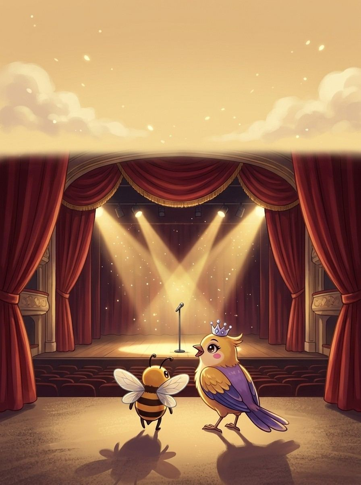
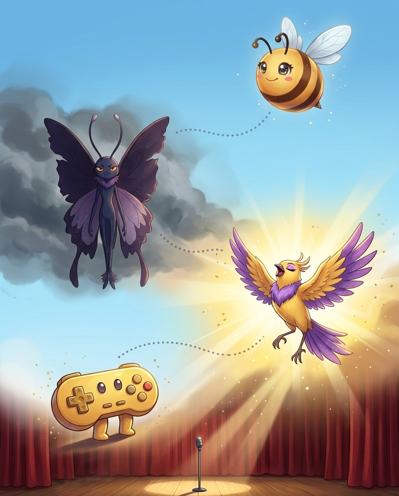
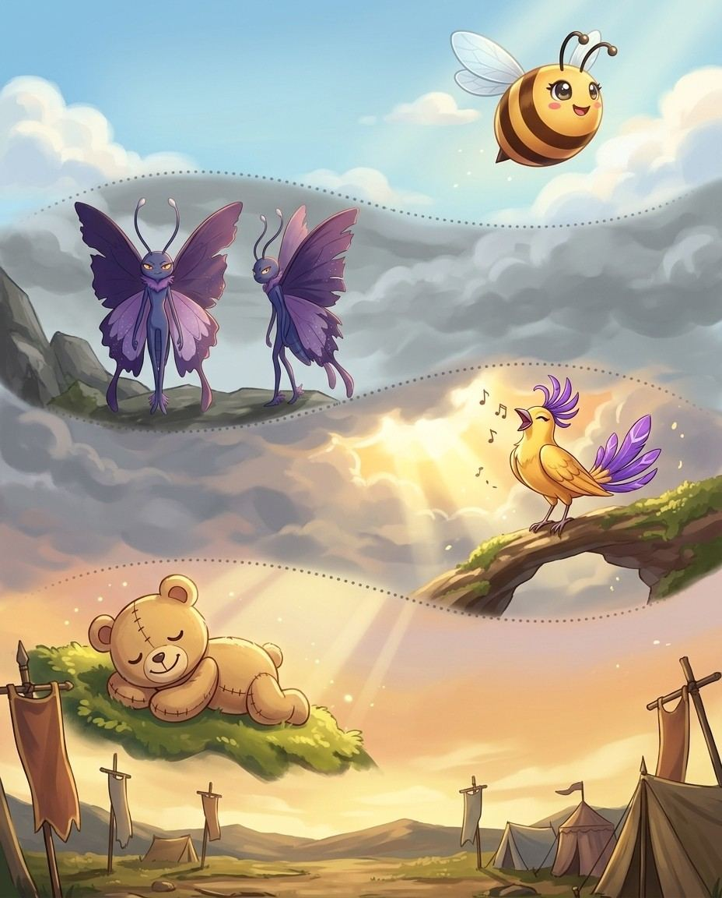
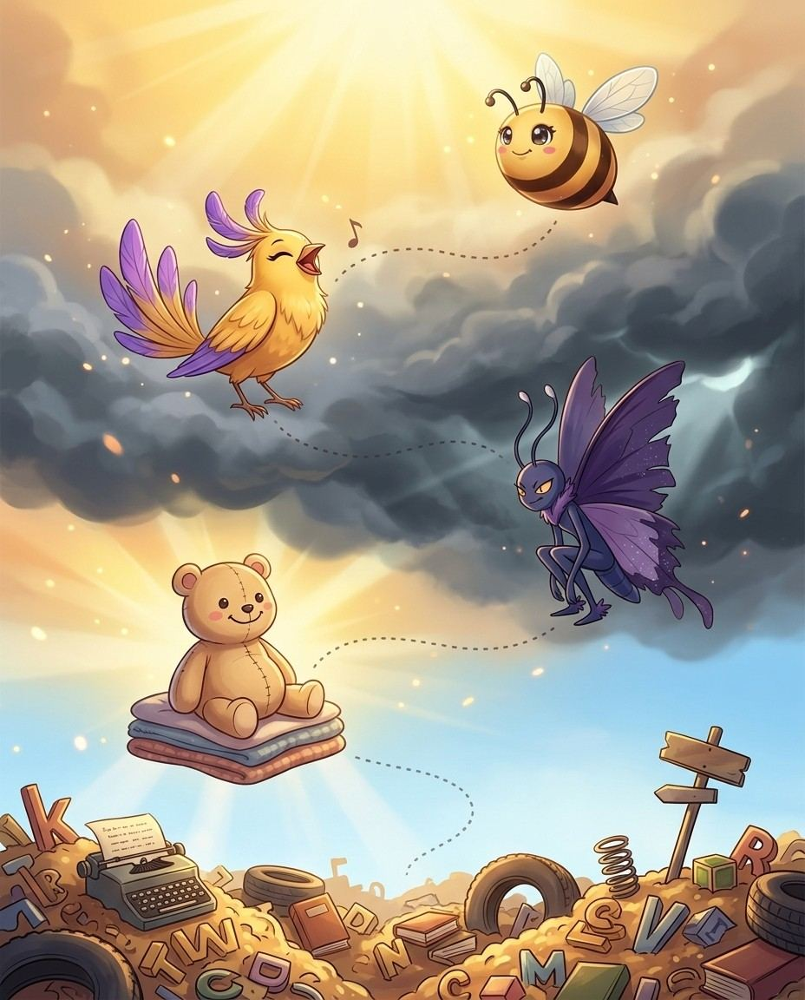

Diva here. Suffixes, strategy and championship closers — that's the route. The crew and I will keep it moving; you keep the pencil moving.
1
Read the story
Each chapter opens as a storyboard. Vex sets the trap; the crew talks you out of it.
2
Steal the pro move
The dark box is how a champion thinks on stage. It works on brand-new words too.
3
Spell out loud, then write
Say it, spell it aloud, write it. The order matters — it is how the stage will ask for it.
4
Pass the checkpoint
A short quiz on the chapter you just read. Circle your answers; the back of the book keeps the truth.
5
Play the game, then revise
Every chapter ends with a fun game, answer key at the back. Revise all words at the end and circle the ones you can spell and define.
Bizzing Bee · Endings That Win1
Endings That WinThe cast
Bizzy — and this book's guide, Diva
The crew of Vol. 5
Every book travels with a crew. These nine hand you puzzles, host the checkpoints and occasionally get a line right before you do.
Bizzy — The little bee who spells the world back together, one petal at a time. · Diva — The star everyone came to hear.
D-Pad
OVR 52
Speller of the Arcade
Up, down, left, right — always knows the way.

Plushy
OVR 66
Champion of Good Vibes
The softest, most huggable hero.
Glitch
OVR 79
Champion of the Arcade
A friendly bug in the machine.
Lumen the Light
OVR 72
Speller of the Spotlight
A living spotlight that never lets the stage go dark.
Pixel Pal
OVR 47
Rookie of the Arcade
Player one, ready to start.
Duckie
OVR 59
Speller of Good Vibes
Floats through every challenge, unbothered.
Gold Legend
OVR 85
Grandmaster of the Spotlight
The legend the marquee was built for.
Melody
OVR 67
Champion of the Spotlight
She hums the tune the whole world forgot.
And the other one
Vex the word-moth sneaks through every chapter, planting the exact mistakes real spellers make. Spot the trap before you step in it.
Bizzing Bee · Endings That Win2

WELCOME TO
The Big Stage
Endings decide everything under the spotlight. This is where words take a bow.
Bizzing Bee · Endings That Win3

1Latin Suffixes · the Big Stage-tion / -sion / -cion (action / state / result)
BizzyOne /shun/ sound, three spellings
UH-OH!
Vex-tion is always ONE syllable = /shun/
GOT IT!
D-Padpredilection = pre- + dilectus (chosen)
Pixel PalRoot ends in t/te → -tion (act → action)
♫ narratedturn the page — the whole trick, explained →
4
Chapter 1 · -tion / -sion / -cion (action / state / resul…The idea · ★★☆
The big idea
The most common suffix in English — from Latin -tionem. Three spellings, one /shun/ sound, thousands of words. The right spelling depends on the root that precedes it.
The pro move
EXACERBATION
Say it. ih-gza-ser-BAY-shuhn
Spell it. E · X · A · C · E · R · B · A · T · I · O · N
-tion = after most roots: exacerbation, perdition, scintillation. -sion = after d, l, n, r + vowel: extension, mansion, revision. -ssion = after stressed vowel: mission, passion, session, permission.
The Decision Rule
Does the root end in d or se? Use -sion: extend → extension, revise → revision. Does it end in t or te? Use -tion: act → action, create → creation. Does it end in ess?
Vex alert
An exACERBATION is the bitter process of making things worse.
Check yourself
Cover the page and spell exacerbation · propitiation · supplication out loud. Miss one? Read the idea again — it's faster than guessing twice.
6. action that makes a problem or a disease (or its symptoms) worse
7. a predisposition in favor of something
8. confusion resulting from failure to understand
Down
1.
2.
3.
4. something that remunerates; payment or compensation for work or services
5. compensation for a wrong
Bizzing Bee · Endings That Win9

2Latin Suffixes · the Proving Ground-ous / -ious / -eous / -uous (full of / having qualit…
Bizzy-ous = full of / having the quality of
UH-OH!
Vexmischievous = 3 syllables, no extra -i-!
GOT IT!
PlushyThe -acious cluster from Latin -ax
Duckieigneous = ignis (fire) + -eous
♫ narratedturn the page — the whole trick, explained →
10
Chapter 2 · -ous / -ious / -eous / -uous (full of / havin…The idea · ★★☆
The big idea
The -ous adjective family means "full of" or "having the quality of." Choosing -ious, -eous, or -uous depends on the noun base. These endings produce some of the richest vocabulary in English.
The pro move
PERSPICACIOUS
Say it. per-spuh-KAY-shuhs
Spell it. P · E · R · S · P · I · C · A · C · I · O · U · S
3Latin Suffixes · the Grey Sea-able / -ible (capable of being)
BizzyOne sound, two spellings: -able / -ible
UH-OH!
Vexirresistible = double-r from ir- assimilation
GlitchWhole word → -able (depend → dependable)
Gold LegendLatin stem → -ible (vis- → visible)
♫ narratedturn the page — the whole trick, explained →
16
Chapter 3 · -able / -ible (capable of being)The idea · ★★☆
The big idea
Two spellings, one /uh-bul/ sound. The right choice depends on whether the root can stand alone as an English word. Championship spellers know both the rule and the exceptions.
These noun suffixes create abstract nouns from adjectives. The rule: adjectives in -ant become -ance; adjectives in -ent become -ence. But French-origin words may not follow — and those are the ones in bees.
The pro move
EFFERVESCENCE
Say it. ef-er-VES-ents
Spell it. E · F · F · E · R · V · E · S · C · E · N · C · E
Five suffixes that convert other words into abstract nouns — from different linguistic origins, covering different territory. Together they create the vocabulary of qualities, conditions, and realms.
The pro move
PERSPICACITY
Say it. —
Spell it. P · E · R · S · P · I · C · A · C · I · T · Y
Say it again. —
Syllables. p · e · r · s · p · i · c · a · c · i · t · y
The most formal abstract suffix from Latin -itas. Perspicacity, sagacity, audacity, mendacity, loquacity, voracity, tenacity, vivacity — all from -acious adjectives.
-ness (Old English)
The most flexible abstract suffix — works with almost any adjective. Happiness, sadness, darkness (everyday). Also with complex Latinate adjectives: conscientiousness, fastidiousness, scrupulousness.
Vex alert
CHILDHOOD wears a HOOD like Little Red Riding Hood — don't forget the double-O in -hood.
Check yourself
Cover the page and spell perspicacity · sagacity · audacity out loud. Miss one? Read the idea again — it's faster than guessing twice.
When English says "a person who does something," it borrows from six different languages. Origin determines suffix. The French -eur and -eer words are the ones that trip spellers most.
The pro move
RESTAURATEUR
Say it. reh-ster-uh-TUR
Spell it. R · E · S · T · A · U · R · A · T · E · U · R
Latin roots take -or: actor, senator, elevator, narrator. Old English/Germanic roots take -er: builder, teacher, baker, singer. Works about 85% of the time.
-ist (Greek) = Practitioner or Believer
Added to nouns: pianist, violinist, cyclist. Added to ideologies: socialist, nihilist. Added to Greek roots: botanist, physicist. Lyricist = one who writes lyrics.
Vex alert
An auctionEER has an EER — he steers the bids; EER not EAR, because he speaks, not listens.
Check yourself
Cover the page and spell restaurateur · connoisseur · chauffeur out loud. Miss one? Read the idea again — it's faster than guessing twice.
♫ narratedturn the page — the whole trick, explained →
40
Chapter 7 · Words About Lying & Deception (Rhetorical Ter…The idea · ★★★
The big idea
Rhetorical vocabulary describes the techniques of persuasion, deception, and argument. From Aristotle through modern debate, these terms appear in championship bees and are built from Greek and Latin roots.
The pro move
DISSIMULATION
Say it. dih-sim-yoo-LAY-shun
Spell it. D · I · S · S · I · M · U · L · A · T · I · O · N
♫ narratedturn the page — the whole trick, explained →
46
Chapter 8 · Personality: Words About Talkers, Thinkers & …The idea · ★★★
The big idea
Advanced personality vocabulary for the competition stage. These are Word Power Made Easy's highest-level words — the ones that separate contestants who have studied from those who have just read a list.
The pro move
PUSILLANIMOUS
Say it. pyoo-suh-LA-nuh-muhs
Spell it. P · U · S · I · L · L · A · N · I · M · O · U · S
9Advanced Spelling Strategy · the Paper MountainsThe Schwa Problem & Unstressed Vowels
BizzyThe schwa: the lazy /uh/ sound
UH-OH!
Vexseparate has -ar-, not -er-
GOT IT!
MaestroStrategy: stress a related word
Lumendefinition → define reveals the i
♫ narratedturn the page — the whole trick, explained →
52
Chapter 9 · The Schwa Problem & Unstressed VowelsThe idea · ★★★
The big idea
The schwa — the unstressed /uh/ sound — is the most common vowel sound in English and can be spelled with any of the five vowels. Solving the schwa is the single biggest challenge in advanced spelling.
The pro move
SEPARATE
Say it. SEH-per-ayt
Spell it. S · E · P · A · R · A · T · E
Say it again. SEH-per-ayt
Syllables. seh · per · ey · t
Sounds → Letters. [SEP=SEP] [ur=AR] [ut=ATE]
What is the Schwa? The schwa (ə) is the neutral, unstressed /uh/ sound. It can be spelled: a (about), e (the), i (pencil), o (lemon), u (circus). Separate* has a schwa in the middle: sep-ar-ate — the ar is reduced to /ur/. Common error: seperate (using e instead of a*). 🃏 Card 2 — **Strategy 1 — Stress the Related Word
Find a related word where the unstressed syllable BECOMES stressed: Competition → stress the compete → /com-PETE/ shows the e in pet. Explanation → explain → /ex-PLAIN/ shows the a.
Strategy 2 — Know the Suffix
Suffix patterns are reliable: -ant words use -ance: important → importance. -ent words use -ence: evident → evidence.
Vex alert
Definite ends in -ite not -ate — remember 'finite' hides inside definITE.
Check yourself
Cover the page and spell separate · competition · explanation out loud. Miss one? Read the idea again — it's faster than guessing twice.
Bizzing Bee · Endings That Win53
Chapter 9 · The Schwa Problem & Unstressed VowelsPractice · ★★★
Say it. Spell it out loud. Write it.
separate
/ SEH-per-ayt / · /ˈsɛpəreɪt/
a separately printed article that originally appeared in a larger publication
hook: There's 'a rat' in sep-A-RAT-e — the rat separates the two e's.
The mountain range divides the two countries
competition
/ kah-mpuh-TIH-shuhn / · /kɑmpəˈtɪʃən/
a business relation in which two parties compete to gain customers
hook: A COMPETITION has a 'petit' in the middle
business ▁▁▁ can be fiendish at times
explanation
/ eh-kspluh-NAY-shuhn / · /ɛkspləˈneɪʃən/
a statement that makes something comprehensible by describing the relevant…
hook: An EXPLANATION makes things PLAIN
the ▁▁▁ was very simple
definite
/ DEH-fuh-nuht / · /ˈdɛfənət/
precise; explicit and clearly defined
hook: Definite ends in -ite not -ate — remember 'finite' hides inside definITE.
I want a ▁▁▁ answer
environment
/ ih-NVEYE-ruh-nmuhnt / · /ɪˈnvaɪrənmənt/
the totality of surrounding conditions
hook: Remember the N before MENT: your envirON-MENT surrounds you on every side.
he longed for the comfortable ▁▁▁ of his living room
government
/ GUH-ver-muhnt / · /ˈɡʌvərmənt/
the organization that is the governing authority of a political unit
hook: GOVERNMENT has an N before MENT — GOVERN+MENT, never drop the N.
the ▁▁▁ reduced taxes
Bizzing Bee · Endings That Win54
Chapter 9 · The Schwa Problem & Unstressed VowelsRapid round · ★★★
More ammo — one line each.
february/FEH-byuh-weh-ree/ the month following January and preceding March
library/LEYE-breh-ree/ a room where books are kept
necessary/n-EH-s-uh-s-eh-r-ee/ is being essential indispensable
privilege/p-r-IH-v-l-uh-j/ a right granted as a peculiar benefit advantage or…
restaurant/REH-ster-ahnt/ a building where people go to eat
temperature/TEH-mpruh-cher/ the degree of hotness or coldness of a body or…
relevant/REH-luh-vuhnt/ having a bearing on or connection with the subject…
category/KA-tuh-gaw-ree/ a collection of things sharing a common attribute
mathematics/ma-thuh-MA-tihks/ a science (or group of related sciences) dealing…
Lock them in
Pick 4 words from above. Say each one as you write it — three times, no shortcuts. The third copy is the one your hand remembers.
Bizzing Bee · Endings That Win55
Chapter 9 · The Schwa Problem & Unstressed VowelsCheckpoint · ★★★
Plushy · Champion of Good Vibes runs the checkpoint
Do you own the idea?
Six questions on the chapter you just read. Circle your answers, then check the back. Plushy's power is Steady Nerve — borrow it.
1. What does category mean?
Aa right granted as a peculiar benefit advantage or favor
Ba collection of things sharing a common attribute
Cprecise; explicit and clearly defined
Da building where people go to eat
2. What does necessary mean?
Athe totality of surrounding conditions
Bis being essential indispensable
Ca building where people go to eat
Dprecise; explicit and clearly defined
3. “NECESSARY: one Collar, two Socks — one 'c' and two 's's, like a shirt needs.” — which word is that about?
Acategory
Blibrary
Cnecessary
Drelevant
4. Which word fills the gap? “the ▁▁▁ reduced taxes”
Acompetition
Bgovernment
Cdefinite
Drelevant
5. Which word belongs to this chapter’s family?
Aimperturbable
Bmellifluous
Ccategory
Dprincipal
Dictation round
Hand this page to anyone nearby. They read the words from the answer key (Ch. 9 dictation, at the back) — you write, no peeking.
1.
2.
Bizzing Bee · Endings That Win56
Chapter 9 · The Schwa Problem & Unstressed VowelsGame · ★★★
♫ narratedturn the page — the whole trick, explained →
58
Chapter 10 · The 44 Phonemes — Sound-to-Spelling MasteryThe idea · ★★★
The big idea
English has 26 letters but 44 distinct sounds (phonemes). The Bizzing Bee Sound Trick works by mapping sounds to letters. This concept covers the hardest sound-spelling mismatches — the ones where one sound has multiple possible spellings.
The pro move
ONOMATOPOEIA
Say it. on-oh-mat-oh-PEE-uh
Spell it. O · N · O · M · A · T · O · P · O · E · I · A
f = fun, fish (everyday words). ph = phone, graph (Greek words). ff = off, cliff, staff (after short vowel at end). gh = enough, rough, tough (Old English).
The /k/ Sound — 5 Spellings
k = king, kind (before e/i). c = cat, cup, cold (before a/o/u). ck = lack, brick, deck (after short vowel at end of syllable). ch = chemistry, echo (Greek). que = unique, clique (French).
Vex alert
PHENOMENON ends in -ON not -IN — one phENOMENon, many phenomENA.
Sound trap
knight sounds like nait, night · rough sounds like ruff — at the mic, always ask for the meaning.
Check yourself
Cover the page and spell onomatopoeia · phenomenon · knight out loud. Miss one? Read the idea again — it's faster than guessing twice.
9. the part of a golf course bordering the fairway where the grass is not cut short
Down
1. is a fact or occurrence observed or observable
2. is the manner in which the technical skills of a particular art are used
3. someone who plays a musical instrument (as a profession)
5. a politically organized body of people under a single government
7. an adequate quantity; a quantity that is large ▁▁▁ to achieve a purpose
Bizzing Bee · Endings That Win63

11Championship Level · the Word JunkyardChampionship Vocabulary: The Final 10
GOT IT!
BizzyThe hardest words decide championships
UH-OH!
Vexconnoisseur: double-n, double-s, French -eur
GOT IT!
PlushySay it. Spell it. Say it again
Duckietriskaideka (13) + phobia → fear of 13
♫ narratedturn the page — the whole trick, explained →
64
Chapter 11 · Championship Vocabulary: The Final 10The idea · ★★★
The big idea
The highest-level competition words — chosen because they combine unusual spelling patterns, rare etymology, and rich meaning. These are the words that decide championships.
The pro move
PLENIPOTENTIARY
Say it. plen-ih-puh-TEN-shee-ehr-ee
Spell it. P · L · E · N · I · P · O · T · E · N · T · I · A · R · Y
Three words that appear in championship rounds because they are long, built from multiple Latin parts, and have tricky stress patterns. Plenipotentiary = full power (diplomatic).
onomatopoeia, ophthalmologist, triskaidekaphobia
Three Greek compounds. Onomatopoeia = naming by sound (6 syllables). Ophthalmologist = eye doctor (5 syllables, -phth- cluster).
Vex alert
IRREFUTable: no E before -able. The argument is so strong you cannot REFUTE it — ir+REFUT+able.
Check yourself
Cover the page and spell plenipotentiary · perspicacious · pusillanimous out loud. Miss one? Read the idea again — it's faster than guessing twice.
Bizzing Bee · Endings That Win65
Chapter 11 · Championship Vocabulary: The Final 10Practice · ★★★
♫ narratedturn the page — the whole trick, explained →
70
Chapter 12 · Personality: Generosity & MiserlinessThe idea · ★★☆
The big idea
From magnanimous givers to parsimonious hoarders, this cluster of words describes attitudes toward sharing, spending, and keeping. Built primarily on Latin roots of giving and withholding.
Championship rounds include words from Hebrew, Malay, Swahili, Welsh, and other less-common source languages. These have distinctive patterns that cannot be decoded from Latin or Greek knowledge alone.
The pro move
SERENDIPITY
Say it. s-eh-r-uh-n-d-IH-p-ih-t-ee
Spell it. S · E · R · E · N · D · I · P · I · T · Y
Say it again. s-eh-r-uh-n-d-IH-p-ih-t-ee
Syllables. s · e · r · e · n · d · i · p · i · t · y
Jubilee (yobhel = ram's horn = the year of the horn blast = a 50-year celebration). Amen = so be it. Cherub (kerubh) = a type of angel. Leviathan (liwyathan = sea monster). Sabbath (shabbat = rest).
Malay Loanwords
Amok (amuk = furious attack) = "running amok." Orangutan (orang = person + hutan = forest) = "person of the forest" — O-R-A-N-G-U-T-A-N. Bamboo (mambu). Rattan (rotan). Gong (gong).
Vex alert
Serendip-ITY: a happy DIP into the lucky city of ITY — stumbling onto gold!
Check yourself
Cover the page and spell serendipity · jubilee · leviathan out loud. Miss one? Read the idea again — it's faster than guessing twice.
That's the volume. Diva signs off — the words are yours now.
DONE
★
+1
Every word in here also lives in the Bizzing Bee app, with real audio, games and a coach that remembers what you miss. Paper for the muscles, app for the ears.
Bizzing Bee is an independent study project — not affiliated with, sponsored by, or endorsed by the Scripps National Spelling Bee, the North South Foundation, or Merriam-Webster. Competition names appear only to describe what the practice material relates to. Definitions, sentences, hints and stories are written for this project. Typefaces are open-licensed (SIL OFL).

 The Bizzing Bee
The Bizzing Bee